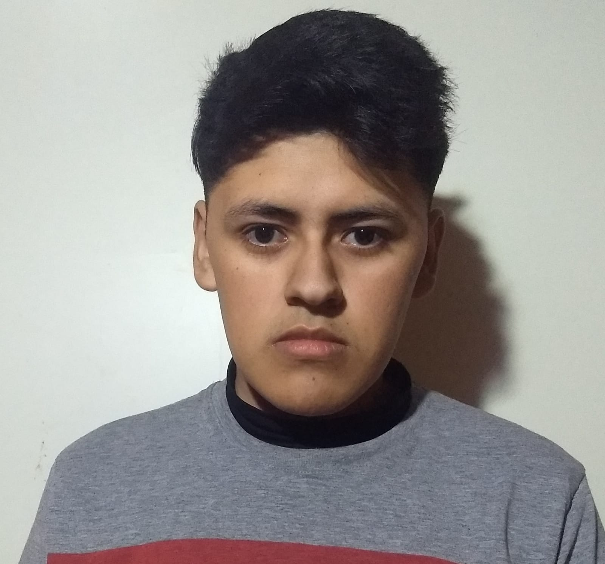

Gaitan Joaquin - Tecnicatura Unv. En Informatica
"Buenas a todos, soy Joaquín Gaitán. Actualmente estoy cursando la carrera de Tecnicatura Unicersitaria en Informática en la UNLaR .Y en este preyecto les muestro mi pagina web, y hablar un poco de mi y de mis habiliadades que fui desarrollado en la materia. Como estudiante de informática, estoy constantemente buscando formas de mejorar mis habilidades y crear productos útiles. A través de esta página web, quiero mostrarles lo que he aprendido hasta ahora y, al mismo tiempo, invitarlos a que exploremos juntos el mundo de la programación."
Acerca de Mí
¿Quién Soy?
Soy un apasionado desarrollador web con experiencia en la creación de aplicaciones y sitios web dinámicos. Me encanta transformar ideas en realidades digitales y encontrar soluciones creativas a problemas complejos.
Mi Filosofía
Creo firmemente en la importancia de la colaboración y el aprendizaje continuo. Me esfuerzo por mantenerme actualizado con las últimas tendencias y tecnologías en el desarrollo web para ofrecer soluciones innovadoras y de alta calidad.
¿Qué Busco?
Estoy en busca de nuevas oportunidades que me permitan crecer profesionalmente y contribuir a proyectos desafiantes que tengan un impacto positivo. Estoy emocionado por colaborar con otros profesionales apasionados y seguir aprendiendo en el proceso.
Mis Habilidades
Lenguajes de Programación
- HTML5 (Basico)
- CSS3 (Basico)
- C (Basico)
Diseño
- Adobe Photoshop
- Adobe Illustrator
- Figma
- Sketch
Habilidades Blandas
- Trabajo en equipo
- Comunicación efectiva
- Resolución de problemas
- Adaptabilidad